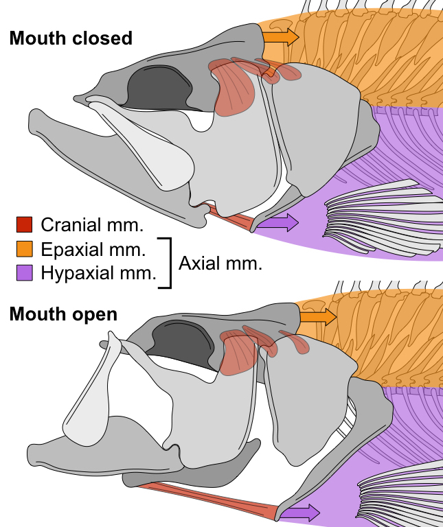

home >
current projects > suction feeding
Suction feeding in fishes and its influence on body diversification

Cranial and axial muscles applying force through the cranial linkage mechanism
Suction feeding is the oldest and most widespread feeding strategy among the Osteichthyes (bony fishes).
Fish suction feed by rapidly expanding the buccal
cavity to create a negative pressure gradient, which drives the flow of water and
nearby prey items into the mouth.
It has recently been shown that 95% of the power required for suction feeding in largemouth
bass is generated by the axial muscles that span most of the body and also function in swimming
(
Camp and Brainerd 2014;
Camp et al. 2015).
These muscles pull on the back of the head and cause the mouth to expand
through a three-dimensional linkage of mobile cranial bones.
Whether locomotor muscles provide most of the power in other suction-feeding
ray-finned fishes remains unknown.
Additionally, if largemouth bass are representative of other suction feeding fishes,
how motor coordination between cranial and postcranial functional systems has
influenced the diversification of body forms among fishes also remains unknown.
For my postdoctoral research I am integrating
in vivo, modeling, and
collections-based approaches to understand how the biomechanics of suction
feeding has influenced the diversification of body forms in ray-finned fishes.
Working with Beth Brainerd (Brown University) and Ariel Camp (Brown University) I will be measuring
in vivo
kinematics and buccal pressures from four species of ray-finned fishes.
I will use these
in vivo data to validate a computational model
of cranial linkage kinematics and force transmission during suction feeding,
expanding on work I began during as a part of my PhD thesis with Mark Westneat (University of Chicago).
These models will then be applied to CT scans of a diverse sample of ray-finned
fishes using natural history collections to predict cranial linkage movements and
suction performance and test how motor coordination
between the head and trunk for suction feeding relates to variation in
body forms across ray-finned fishes.
Publications resulting from this project
-
Olsen AM, Westneat MW (2016). Linkage mechanisms in
the vertebrate skull: Structure and function of three-dimensional, parallel transmission systems.
Journal of Morphology. Early View. DOI: 10.1002/jmor.20596.
Get via Wiley;
Get via ResearchGate.
Software related to this project